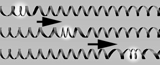

Emmanuel :
Jean-Louis, les termes employés dans ce domaine posent un
problème : ils semblent entrer fortement en conflit au
niveau du sens avec les définitions académiques. Pourtant ils sont
ici très précis. Peux-tu revenir sur le concept d'onde pour en venir à
ceux d'onde transverse, d'onde plane et d'onde longitudinale ?
Jean-Louis :
Une onde c'est une perturbation. Electrique, mécanique, magnétique, ce
que tu veux. Elle se propage, sur son passage le milieu est
temporairement perturbé, hors de son équilibre.
L'ensemble des points de l'espace qui
subissent cette perturbation à un instant t définit " le front
d'onde". Il peut avoir de une à trois dimensions.
Si l'ensemble des "points perturbés à un
instant t" est un plan, l'onde est dite "plane". Si l'ensemble des
points perturbés à un instant t est une sphère (au sens mathématique,
c'est-à-dire une surface, pas un volume), l'onde est sphérique.
En tout point on peut définir une direction
de propagation pour l'onde. Si la perturbation est parallèle à cette
direction locale, l'onde est longitudinale.
Exemple d'onde longitudinale, un simple ressort à boudin :

Si l'onde est unidimensionnelle et longitudinale, elle perturbe le
milieu selon cette même ligne. Si c'est une onde plane, elle perturbe le
milieu en avant et en arrière de ce plan, si c'est un onde sphérique, la
perturbation est perpendiculaire à la surface de la sphère, en avant et
en arrière.
Si la perturbation est perpendiculaire à la direction locale, l'onde est
transverse.
Emmanuel : On
en revient à notre schéma animé pour la deuxième fois.

Jean-Louis : Pour les particules de colorants, on
attendrait une onde transverse donc en principe aucune composante
radiale [ndlr : aussi bien, longitudinale]. Le fait d'avoir quand même une composante radiale implique que l'onde n'est
pas purement transverse.